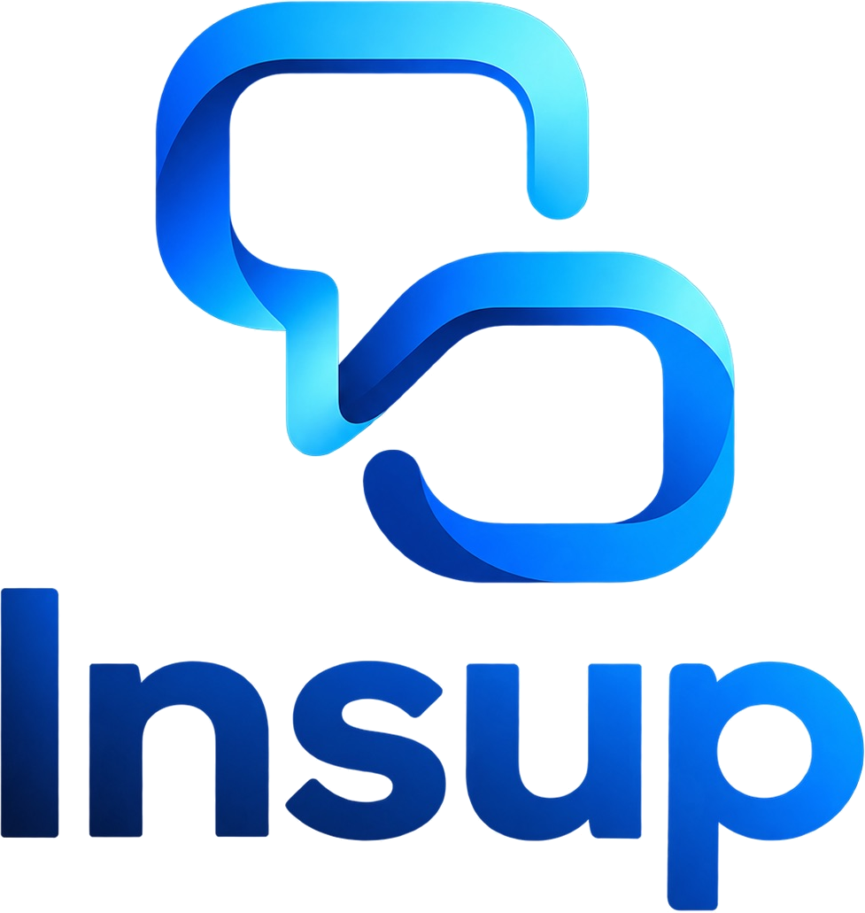

HPリニューアル 提案一覧
本番のホームページ（制作中）
入口ページ／企業様向けページ／働きたい方向けページ／プライバシーポリシー
社員さんへの質問シート（仮）
社員紹介に載せる5項目と、3つの質問
v5 確認ページ
入口の光（E4に決定）／企業様向けに入るときの動き／コピーB4・W1の動き／社員紹介／ラウンジのコピーの動き／最初の画面と並び順／下のタブ／社員さんへの質問シート
v4 確認ページ
最初の画面（粒子・明るめ）／配色×コピーの切り替えプレビュー／ラウンジ動画2案／並び順
v3 最初の画面・アクセス・ラウンジ
受付サイン写真の見せ方2案／アクセス／ラウンジと説明文3案
v2 デザイン案
配色×3D背景6案／フルリモートのコピー案／スライドの並び順
v1 構成案
ページ構成6案／TOPの並び順6案（決定：入口＋企業様向け・働きたい方向けの全画面スライド型）